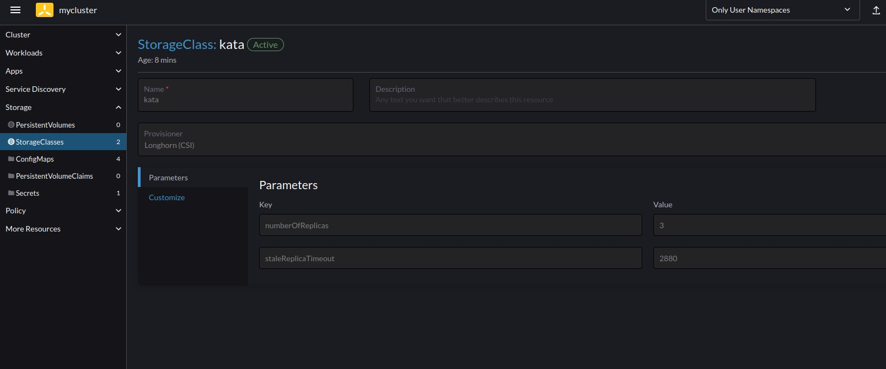

Rancher-Ops Notes
This document is mostly for personal usage, the steps I took to build the guides on the main page.
Kata Containers
I found a guide to deploy Kata Containers on their github, using the kata-deploy tool.
According to a related doc packaged install methods, kata-deploy is more for testing, and users are recommended to use the distro packages, as they have automatic updates. However, the only distro packages available are for Centos, and Fedora. 34.
Some guides for ubuntu, like this one ask to you add a repository, but that repository is unmaintaned and has not been updated since 2019.
There is also an unmaintained snap package.
Kata-deploy
Follow instructions here:
It sits at pending forever, but I think that’s because I have juju trying to deploy at the same time, so the system is running out of resources.
I created recreated my whole system, and now I get a different error with the sample kata file, from the rancher ui:
0/1 nodes are available: 1 node(s) didn't match Pod's node affinity/selector. preemption: 0/1 nodes are available: 1 Preemption is not helpful for scheduling..
Likely, for whatever reason, the kata runtime isn’t actaully being added. Or, this could be a resources issue. After I attempted to run this, my laptop began freezing up, a lot.
I found an article which discusses adding kata to k3s, and it’s mostly the same, except I notice one difference:
k3s kubectl vs just kubectl. I didn’t know that k3s has certain commands builtin. Except not really, it seems that kubectl is also downloaded by k3s, but it’s possible that this gets around the issue where by default, kubectl doesn’t have permission to read k3s kubeconfig file.
Anyway, what’s strange is that when I run the command to check if kata is isntalled, kuebctl reports it as installed:
moonpie@debian:/etc/containerd$ kubectl get nodes --show-labels
NAME STATUS ROLES AGE VERSION LABELS
debian Ready control-plane,etcd,master,worker 33m v1.26.7+k3s1 beta.kubernetes.io/arch=amd64,beta.kubernetes.io/instance-type=k3s,beta.kubernetes.io/os=linux,cattle.io/os=linux,katacontainers.io/kata-runtime=true,kubernetes.io/arch=amd64,kubernetes.io/hostname=debian,kubernetes.io/os=linux,node-role.kubernetes.io/control-plane=true,node-role.kubernetes.io/etcd=true,node-role.kubernetes.io/master=true,node-role.kubernetes.io/worker=true,node.kubernetes.io/instance-type=k3s,plan.upgrade.cattle.io/system-agent-upgrader=4d055e2e83d97dfacdf00e6527c5292be589576dcb9636cd39093e4e,rke.cattle.io/machine=46467e58-984f-4213-bb60-5d9afa06f59fBut the pod fails, and I can’t understand why.
Kata Manager
Docs here: https://github.com/kata-containers/kata-containers/blob/main/utils/README.md
curl -fsSL https://raw.githubusercontent.com/kata-containers/kata-containers/main/utils/kata-manager.sh -o kata-manager.sh
chmod +x kata-manager.sh
With the kata-manager tool, -h gives a help menu. Since I have k3s already installed, I will just install kata-manager with the
kubectl apply -f https://raw.githubusercontent.com/kata-containers/kata-containers/main/tools/packaging/kata-deploy/runtimeclasses/kata-runtimeClasses.yaml
kubectl apply -f https://raw.githubusercontent.com/kata-containers/kata-containers/main/tools/packaging/kata-deploy/examples/test-deploy-kata-qemu.yaml
Nope: 0/1 nodes are available: 1 node(s) didn’t match Pod’s node affinity/selector. preemption: 0/1 nodes are available: 1 Preemption is not helpful for scheduling…
K3s doesn’t appear to be configured to support kata.
Juju
Another possibility is to use juju. Juju can add an externally managed kubernetes cluster, using the add-k8s command. (juju list-models will show where you can deploy to, and show-model gives more info.)
Then, you can use the juju operator to deploy the kata charm
Then, you should be able to upgrade the juju charm using juju refresh
sudo snap install juju --classicexport PATH=/snap/bin:$PATHjuju add-k8s myclusterBut I get an error:
moonpie@ubuntu:~$ juju add-k8s mycluster
ERROR cannot load ssh client keys: mkdir /home/moonpie/.local: permission denied
moonpie@ubuntu:~$ sudo juju add-k8s mycluster
[sudo] password for moonpie:
ERROR stat .: permission denied
moonpie@ubuntu:~$ I don’t know why I get this error, but I am guessing it has something to do with snap sandboxing.
Oh, I missed some docs.
mkdir -p ~/.local/sharekubectl config view --raw | juju add-k8s mycluster --clientjuju add-model modelnamejuju deploy kataAnd it claims to have worked, but now my kubernetes command doesn’t work:
moonpie@ubuntu:~$ kubectl get all
The connection to the server 127.0.0.1:6443 was refused - did you specify the right host or port?Thankfully, the kubernetes shell located within rancher still works (I had been using kubectl from the single ubuntu vm I provisioned to be a controller and worker).
However, when I run the kata container test command, it doesn’t work:
Pods "php-apache-kata-qemu-799d4cd788-" is forbidden: pod rejected: RuntimeClass "kata-qemu" not found:Deployment does not have minimum availability.
This makes me think that kata containers weren’t actually installed.
Well, I am first going to look into redownloading the kubeconfig file to the server, that way I can use both juju and kubectl on the same machine.
I am also going to look into alternative options to use juju to configure a k3s/k8s server.
Okay, juju architechture is very confusing. Here’s what I understand:
- Juju client: This is the command line interface. It interacts with juju controllers
- Controller: Controller nodes/vm’s/clusters are responsible for deploying stuff to other clouds
- Clouds are things like kubernetes clusters, aws/gcp, or openstack. You create 1 or more models on these clouds, to deploy to.
- Model. Models are where you deploy to.
So what I want to do is to add
juju bootstrap localhostThe bootstrap command creates a controller. This creates a local controller, by upping lxc containers.
However, I get an error when I try to run it.
The whole error is linked here, but in short, the lxd container on the inside complains about not having network access.
I don’t know why I’m getting this error, but I’m guessing it’s because I am trying to run this on a virtual machine behind NAT, but then it is trying to create either a virtual machine or a container using lxd, so perhaps the nesting of networks is breaking normal internet connectivity.
I found the docs for debugging juju, so I will try some of that.
I found a forum post with my exact issue.
Apparently, the issue was that having docker and lxd running at the same time messes some things up. So I ran a command, and it worked:
sudo iptables -I DOCKER-USER -j ACCEPTkubectl config view --raw | juju add-k8s clustername --controller=localhost-localhostjuju add-model modelname clustername/clusternameBut I get an error
moonpie@ubuntu:~$ juju add-model default default
ERROR failed to open kubernetes client: unable to determine legacy status for namespace "default": Get "https://127.0.0.1:6443/api/v1/namespaces/default": dial tcp 127.0.0.1:6443: connect: connection refusedFirewall? No, I have it disabled.
When I attempt to curl the cluster from the ubuntu machine, I get an error:
moonpie@ubuntu:~$ curl https://127.0.0.1:6443/api/v1/namespaces/default --insecure
{
"kind": "Status",
"apiVersion": "v1",
"metadata": {},
"status": "Failure",
"message": "Unauthorized",
"reason": "Unauthorized",
"code": 401
}Although kubectl still works. I am guessing I didn’t set up the the cluster authentication properly, which is weirdish.
No, I think I know why. It’s becaause localhost isnt’ where the kubectl api is, it’s on the rancher server. I got the kubectl config from rancher, and now I will cat it into juju.
cat config | juju add-k8s .... nevermindmoonpie@ubuntu:~/.kube$ juju clouds
Only clouds with registered credentials are shown.
There are more clouds, use --all to see them.
Clouds available on the controller:
Cloud Regions Default Type
localhost 1 localhost lxd
Clouds available on the client:
Cloud Regions Default Type Credentials Source Description
k3s 0 k8s 0 built-in A local Kubernetes context
localhost 1 localhost lxd 1 built-in LXD Container HypervisorJuju automatically detects k3s.
juju add-cloud k3s
juju add-credential k3sObviously, my credentials are incorrect:
moonpie@ubuntu:~/.kube$ juju add-model test k3s
ERROR failed to open kubernetes client: unable to determine legacy status for namespace "test": the server has asked for the client to provide credentials (get namespaces test)But it seems I can get correct credentials from the rancher kubeconfig file.
Okay, juju does not add k3s by default, that was me. Here’s what I got so far:
juju bootstrap localhost
Download rancher kubectl file and put them in .kube/config (default ish)
KUBECONFIG=config juju add-k8s myk8scloud --cluster-name=mycluster # Here, teh cluster name should be the same as what KUBECONFIG=config kubectl get namespaces gives you.
Select both controller and client.
juju add-credential mycluster
Select oauth2. The token can be gotten from the kubeconfig file that rancher gave us.
Later noted: This behavior is a bug source 2 (links to a fancier workaround). Juju is normally able to add kubernetes clusters straight from the kubecofig file without any messing around with credentials.
juju add-cloud mycluster -c localhost-localhost
This adds your cloud “mycluster” to your controller localhost. Yeah, it gets prety confusing.
juju add-model k3s mycluster --controller localhost-localhost --credential mycluster
It gets even worse.
But here is where I error:
juju deploy kata mycluster
Located charm "kata" in charm-hub, revision 38
Deploying "mycluster" from charm-hub charm "kata", revision 38 in channel stable on ubuntu@22.04/stable
ERROR deploying this Kubernetes application requires a suitable storage class.
None have been configured. Set the operator-storage model config to specify which storage class should be used to allocate operator storage.
See https://discourse.charmhub.io/t/getting-started/152.It complains about not having storage. So I went into the rancher UI, and created a storage class:

But it still complains. However, I feel closer than before.
Hmm, according to some docs juju will search for a default with certain labels.
Unluckily for me, the label syntax is unclear, so I went with annotations instead. Rancher lets you configure the kubernetes default storage class, and it shows up when you view the yaml from the ui:
allowVolumeExpansion: true
apiVersion: storage.k8s.io/v1
kind: StorageClass
metadata:
annotations:
storageclass.beta.kubernetes.io/is-default-class: 'true'
storageclass.kubernetes.io/is-default-class: 'true'
creationTimestamp: '2023-08-17T18:11:30Z'
managedFields:
- apiVersion: storage.k8s.io/v1
fieldsType: FieldsV1
fieldsV1:
f:allowVolumeExpansion: {}
f:parameters:
.: {}
f:numberOfReplicas: {}
f:staleReplicaTimeout: {}
f:provisioner: {}
f:reclaimPolicy: {}
f:volumeBindingMode: {}
manager: agent
operation: Update
time: '2023-08-17T18:11:30Z'
- apiVersion: storage.k8s.io/v1
fieldsType: FieldsV1
fieldsV1:
f:metadata:
f:annotations:
.: {}
f:storageclass.beta.kubernetes.io/is-default-class: {}
f:storageclass.kubernetes.io/is-default-class: {}
manager: Mozilla
operation: Update
time: '2023-08-17T18:11:37Z'
name: kata
resourceVersion: '10792'
uid: 0557689a-4ac0-46bf-8436-7cd0a87492c5
parameters:
numberOfReplicas: '3'
staleReplicaTimeout: '2880'
provisioner: driver.longhorn.io
reclaimPolicy: Delete
volumeBindingMode: ImmediateHowever, despite this annotation, juju won’t actually deploy, it still gives the same error.
I also tried to use juju create-storage-pool juju-storage -m k3s, which gave no output, until the second run:
moonpie@ubuntu:~/.kube$ juju create-storage-pool juju-storage -m k3s
ERROR creating pool "juju-storage": cannot overwrite existing settingsSo it obviously did something, however, I cannot see any storage pools created from the rancher UI. In addition to that, I get the same error when attempting to deploy kata-containers.
I also tried setting, the label, but I still get the same error.
Okay, so now it claims to have worked:
juju model-config operator-storage=kata # I believe this is the storage class name name
Although juju deploy kata mycluster claims to have worked as well.
However, the rancher UI shows an error for both operator pods:
[Unschedulable] 0/1 nodes are available: pod has unbound immediate PersistentVolumeClaims. preemption: 0/1 nodes are available: 1 No preemption victims found for incoming pod..
A quick google says that the latter error is a resource issue.
The first error is something about persistent volumes
Anyway, based on this testing, it looks like I don’t need to create a model, and I can get away with just deploying directly to a cluster after I add it, as long as I have a controller set up.
Okay, I scaled down, not instaling calico, not installing many of the extra services like the Traefick ingress that rancher provides.
moonpie@ubuntu:~$ juju add-relation kata kubernetes-worker
ERROR juju: "add-relation" is not a juju command. See "juju --help".Which is weird, since this is exactly what the charmhub website says to do. This means that those docs are outdated, but I can’t find anything else.
It seems that juju 3.0 removed the relations feature in favor of integrations.